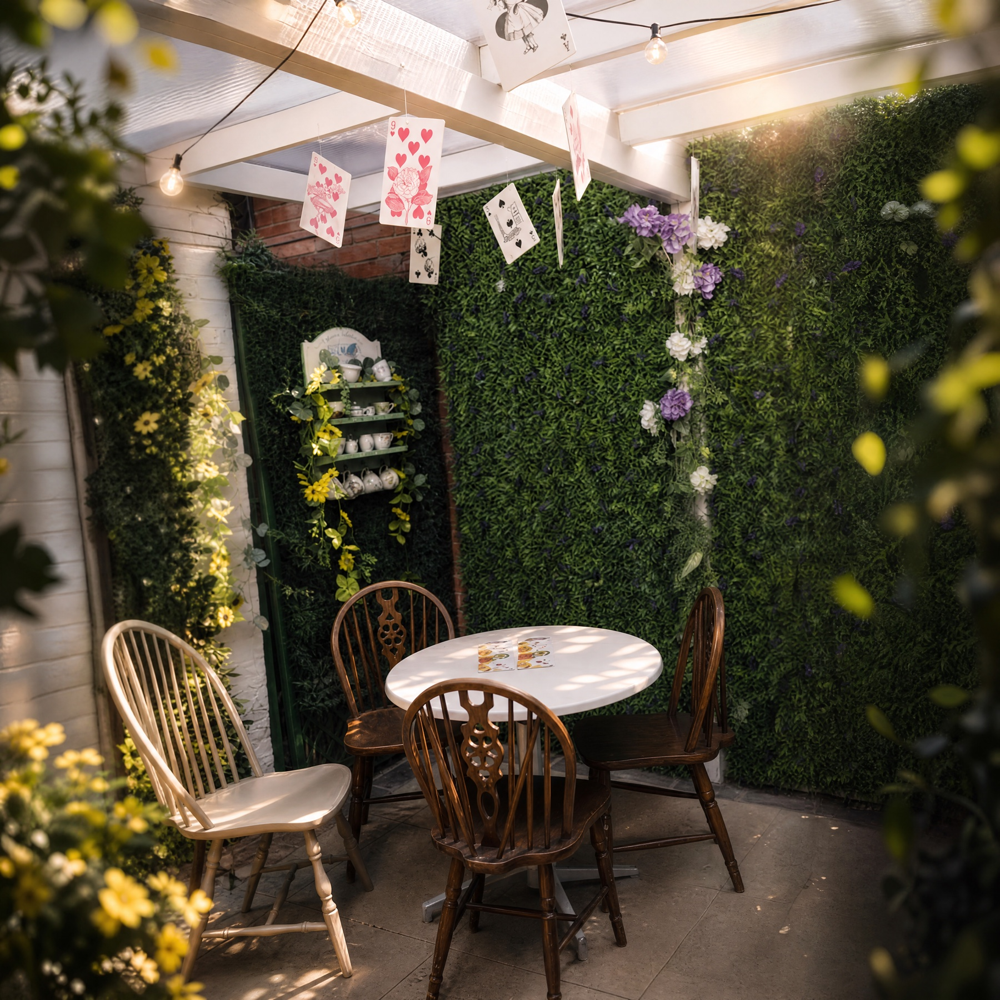
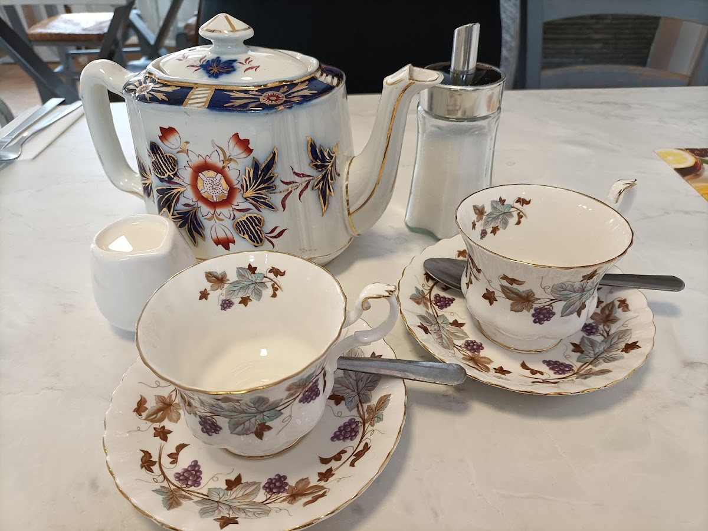
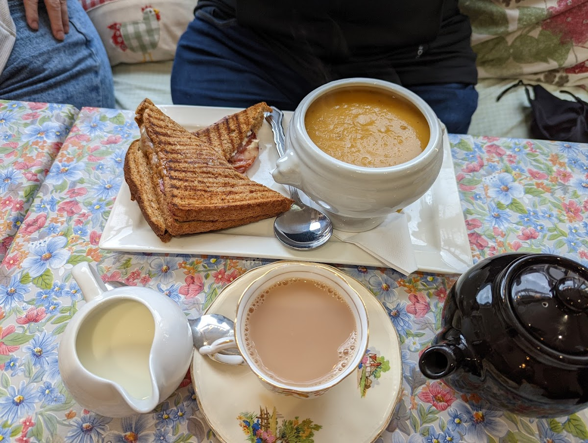
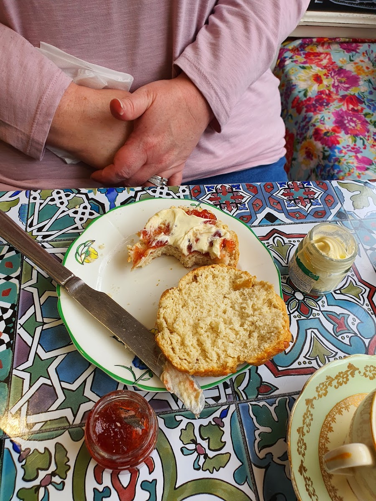

Haviland's High Tea for two
Listed with scones and cream tea for a classic tea-room visit.
from £16.00Meer Street, Stratford-upon-Avon
A little wonder on Meer Street for cream tea, breakfast, sandwiches, and classic lunch plates.

The tea room
Havilands sits on Meer Street in central Stratford-upon-Avon, with dine-in and takeout service, a great tea selection, and Alice-inspired details.
Tea room highlights



Visit
The listing places Havilands Tea Room at 4-5 Meer St, Stratford-upon-Avon CV37 6QB. Call ahead for same-day hours, group plans, and menu availability.
Opening times
Hours can change on holidays or quiet days. Use the phone number above before making a special trip.